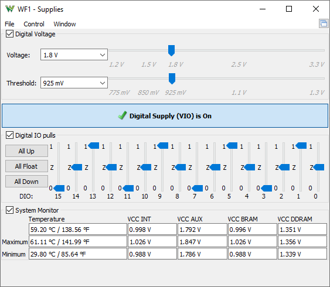

This instrument allows you to adjust and enable the device voltage supply output. See Digital IOs for more information.

The Digital Voltage adjusts the voltage which drives Digital IO pins and also sets the input threshold for the these. The DIO pins have an input hysteresis of 0.1V at 3.3V and 0.275V at 1.2V.
The Voltage Output on VIO pins can be enabled and disabled.
For each Digital IO pin, a 10 kΩ pull can be configured to VCC or GND, or left floating.
The System Monitor displays the temperature and voltages of the Zynq system monitor.
See Menu in Common Interfaces.